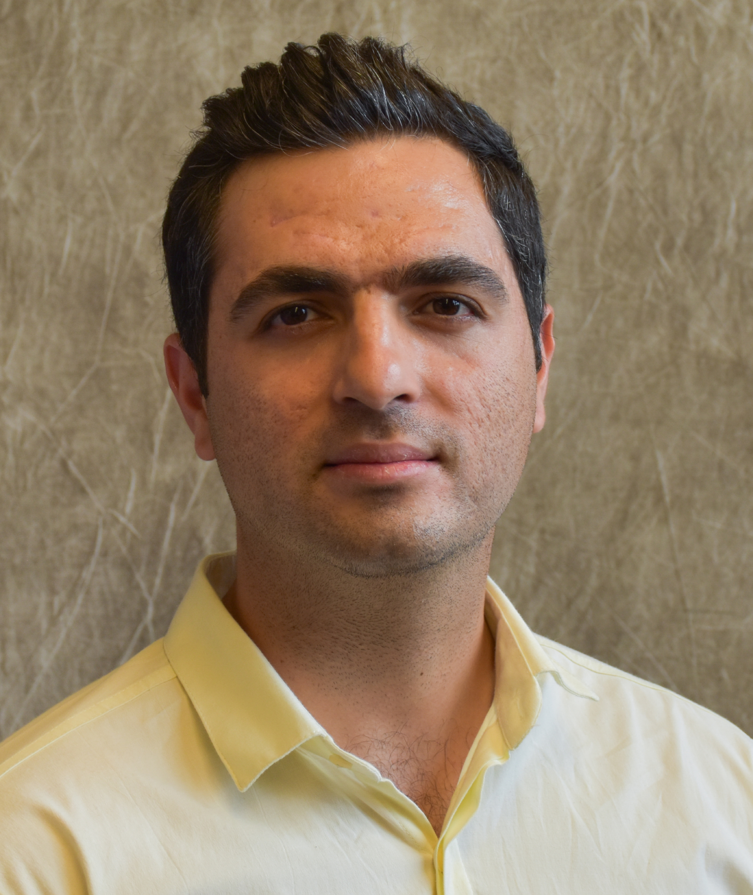

Dr. Jason Hawkins is an Assistant Professor in the Department of Civil & Environmental Engineering at UNL. He holds a Ph.D. (2021) in Civil Engineering from the University of Toronto and M.Sc. (2016) and B.Sc. (2014) in Civil Engineering from the University of Calgary. Dr. Hawkins completed postdoctoral work at the University of Texas at Austin. His primary research focus is the analysis of sustainable infrastructure systems through the application of a wide range of analytic tools.
Graduate assistants
|
Hania Afzal |
Hania is a Ph.D. student in engineering policy at the University of Nebraska-Lincoln. She received her M.Sc. in Economics from IBA Karachi and her B.Sc. in Economics from Quaid-I-Azam University. Prior to joining UNL, Hania was a researcher at Pakistan Institute of Development Economics (PIDE). She is currently working on electric vehicle adoption in the United States. |
|  |
Omid Armantalab |
Omid is a Ph.D. student in transportation engineering at the University of Nebraska-Lincoln. He received his M.Sc. in Civil Engineering from Amirkabir University of Technology and his B.Sc. in Civil Engineering from Kharazmi University. He is currently working on Bayesian statistical representations of transportation accessibility for equity and Justice40 applications. |
|
Mohammad Elayan |
Mohammad is a Ph.D. student in transportation engineering at the University of Nebraska-Lincoln. He received both his M.Sc. and B.Sc. in Civil Engineering from Jordan University of Science and Technology. Mohammad spent a decade working in the transportation industry in the UAE. |
 |
Donya Negahbani |
Donya is an M.Sc. student in transportation engineering at the University of Nebraska-Lincoln. She received her B.Sc. in Civil Engineering from the University of Tehran. |
Undergraduate Research Assistant
Undergraduate students at UNL and UNO are encouraged to reach out to Dr. Hawkins about research opportunities. Current opportunities are available via UCare.
|
Sagun Karki |
Sagun is a sophomore computer science student at the University of Nebraska-Lincoln. He is from Kathmandu, Nepal. Sagun is working on network science analysis and provides coding assistance to the research group. |
|
Kun-Yu Lee |
Kun-Yu Lee is a junior studying a double major in computer science and data science at the University of Nebraska-Lincoln. Originally from Taipei, Taiwan, Kun-Yu is dedicated to enhancing his expertise in software development and computer systems. At the university, he actively engages with various tech-related projects and contributes his coding skills to collaborative research efforts. |
Previous Students
|
Nick Aldridge |
Nick is an M.Sc. student in transportation engineering at the University of Nebraska-Lincoln. He received his B.Sc. in Civil & Environmental Engineering from UNL. His research focuses on developing pedestrian & bicycle crash exposure metrics for the City of Lincoln. |
| 2022-2023 |
Abigail Metschke |
B.S. |
| 2022-2023 |
William Turman |
B.S. |
| 2022-2022 |
Casey Nolte |
B.S. |
| 2022-2022 |
Kumo Babe |
B.S. |